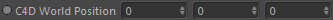
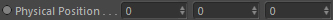
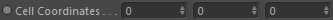
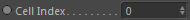

Inports
Channel
The grid-based node to access (read & write)
The following nodes are supported:
1. Any Scalar/Vector Channels (incl. Fire/Fuel/Temp..)
2. Fluid Dynamics (Gas & Liquid) - will read out the velocity grid
3. Volumes - will read out the levelset
C4D World Position

Access the cell value at this C4D world position.
Physical Position

Access the cell value at this global physical position.
Cell Coordinates

Access the cell value at this local cell coordinates.
Velocity Cell Index
Access the cell value at this local velocity cell index.
Cell Index

Access the cell value at this local cell index.
Value
Changes the current grid cell value to this scalar value.
Vector Value
Changes the current grid cell value to this vector value.